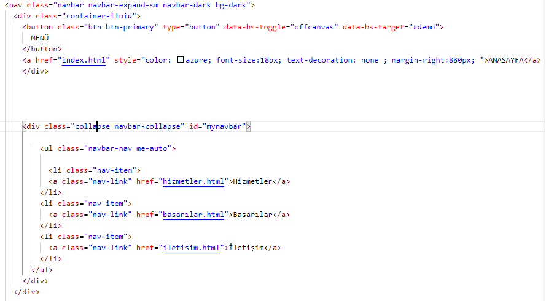

Navbar ve Menü Yapımı
Öncellikle navbarın özelliklerini yazıp sonradan içindekileri düzenliyoruz.Ben burada bir menü ve biri anasayfa ya dönmek için olan link ile birlikte üç adet site içi link ekledim.
-
Menü butonunu yapmak için öncelikle bir buton oluşturmak gerekiyor bunu navbarı oluşturduğumuz navbarın içine ekliyoruz. 
-
Menünün sayfanın sol tarafından açılması inin hedefini yazdığımız pencerenin idsiyle aynı yapıyoruz.
data-bs-target="demo" ve id="demo" 
-